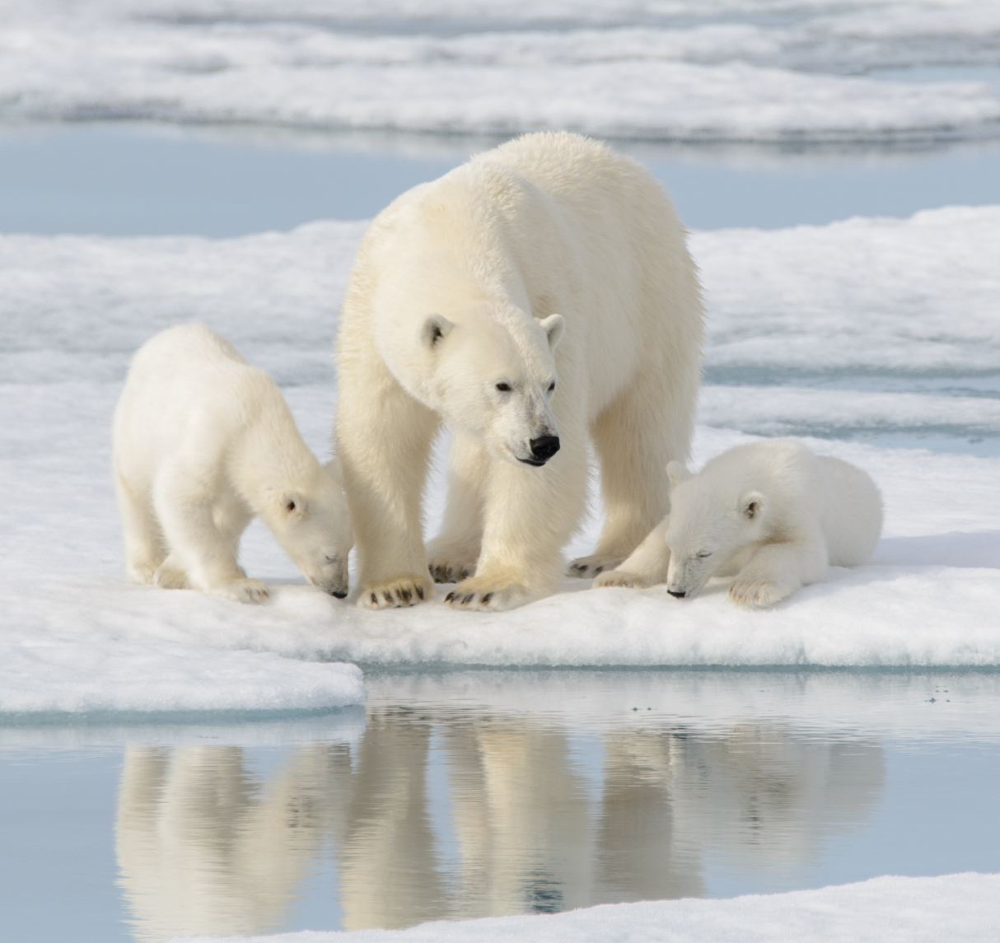

IMPACT
The Arctic sea ice is what Polar Bears rely on to hunt seals, breed, and travel. As the ice disappears due to climate change, these apex predators are forced onto land for far longer periods. This leads to severe malnutrition, dangerous open-water swims, declining cub survival, and increased risk of fatal injuries with human settlements.
Polar bears require ice as a platform to ambush their primary prey, ringed seals. Unfortunately, due to reduced ice, their hunting seasons have become shorter, causing bears to fast longer and lose fat, leading to malnutrition.
HOW TO HELP
Using less energy at home can help burn less fossil fuel. Unplug unused cables and consider switching to renewable energy.
Recycle, compost, and cut down on single-use plastics. Reducing waste helps lower the overall strain and emissions.
Through photosynthesis, trees remove carbon dioxide, a climate-warming gas, from the atmosphere.
FOLLOW US!
© Protect Our Bears / All Rights Reserved / Website Designed by. Faviola Gonzalez